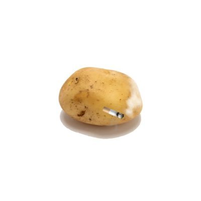

Rain_Raven🏳️🌈
@Raincandy_1937
@Mdlwxhn11111 与其说捞女游戏不如说是白莲花蠢蝻共振游戏

麦当当大薯条（早睡早起上吊版）
@Mdlwxhn11111
今天晚上玩了捞女游戏，我感觉对于我们抠逼来说是绝对不会被捞的，第一章因为没有给女主播刷钱，走向结局。重新再开一把，因为被女主播带去高档餐厅吃饭钱不够找女主播借钱付款，然后被拉黑，又失败了（让我震惊的一点是男主竟然不会吃饭前做好攻略，带上相应的钱或者提前拒绝，而是直接去高档餐厅）